- Studio
- Penn MCP Studio, Spring 2026, led by Katie Levesque, for a newly formed Port Richmond CDC
- My part
- Wrote the chapter and made all of its maps, diagrams and renderings
- Data
- Site observation and photos, Census ACS, OpenDataPhilly
- Tools
- ArcGIS Pro, Excel, Illustrator, Photoshop, InDesign
Port Richmond is an industrial neighborhood on the Delaware River in Philadelphia. Its environment is shaped by neighborhood parks, freight rail and I-95, and an industrial waterfront. A long history of industrial development favored paved land and freight over green space, so the neighborhood's open space is tied to its industrial landscape.
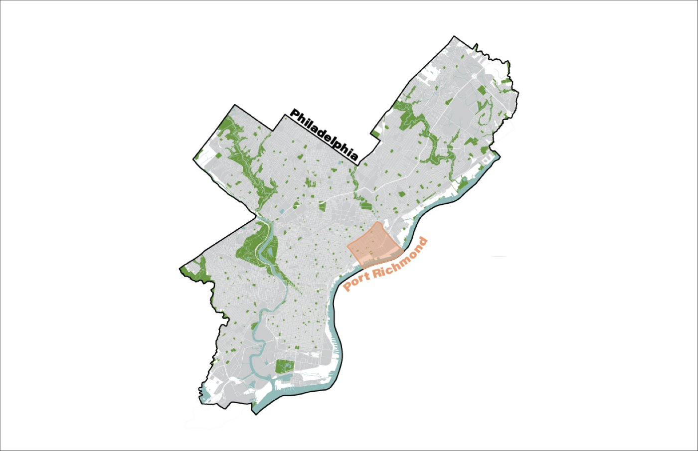
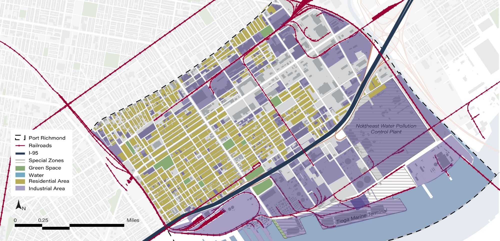
Issues
Looking past individual parks to the environmental fabric of the whole neighborhood.
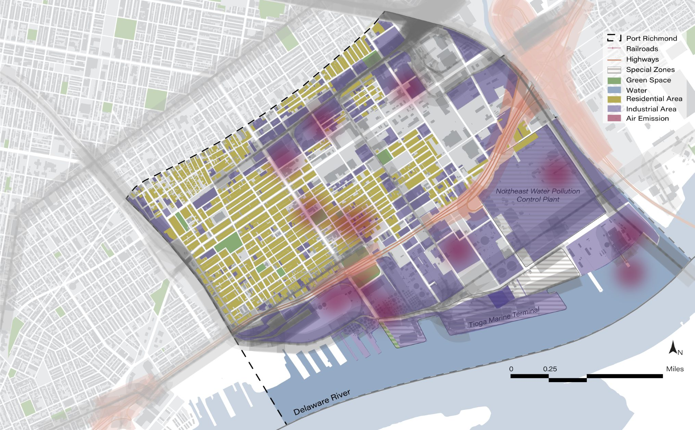
Industrial air pollution
Port Richmond sits between I-95, the marine terminals and active industrial land, and emission sources are spread across the neighborhood. Trees could block industrial dust, absorb exhaust and filter noise, but the neighborhood has fewer parks than the Philadelphia average and a very low tree canopy, so residents are exposed directly to heat and pollution.
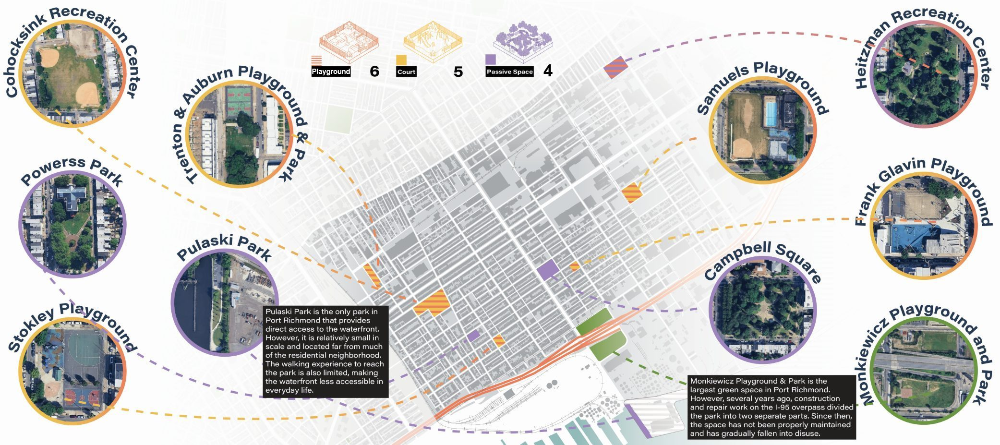
The wrong kind of green space
The neighborhood has nine green spaces, but they offer 5 active courts, 6 playgrounds and only 4 passive green spaces. Adults and middle-aged and older residents make up about 70% of the population, and they need places to sit, walk and rest.
The issue is not simply a lack of green space, but a lack of passive green space for everyday public life.
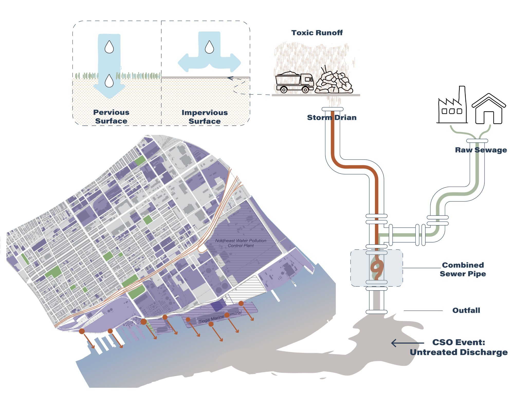
Combined sewer overflow
Paved industrial sites, storage yards, wide roads and parking lots keep rain from soaking in. Polluted runoff flows into a combined sewer that also carries wastewater, and in heavy rain it overflows, sending untreated discharge into the river.
Opportunities
Leftover infrastructure that could become public green space.
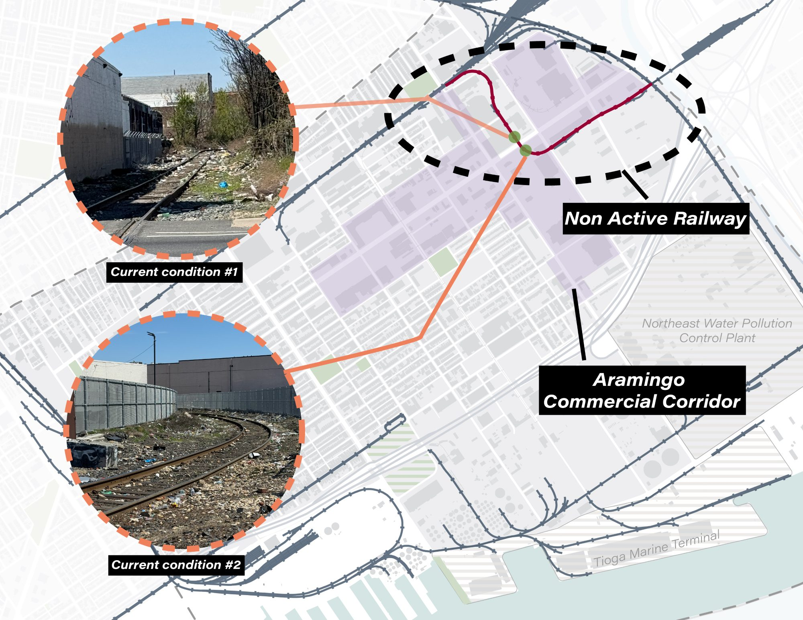
Inactive railway
A former industrial rail line runs tight against buildings and through parking lots in the commercial district, buried in places under trash and debris. It reads as a scar in the urban fabric, but it is also a linear space that already exists and could become a connective public space.
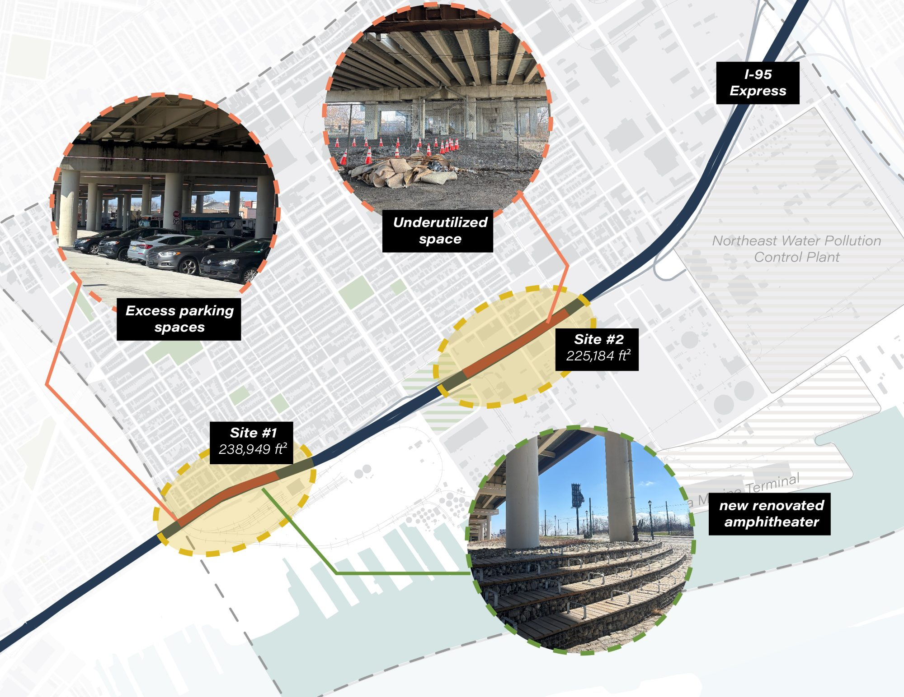
Underpass of I-95
I-95 separates the homes from the industrial area and the waterfront. The space beneath it falls into three types: the embankment, stacked transit and the void. The voids hold the most potential; today they hold more parking than residents need, or nothing. Through site observation we identified two voids for reuse.
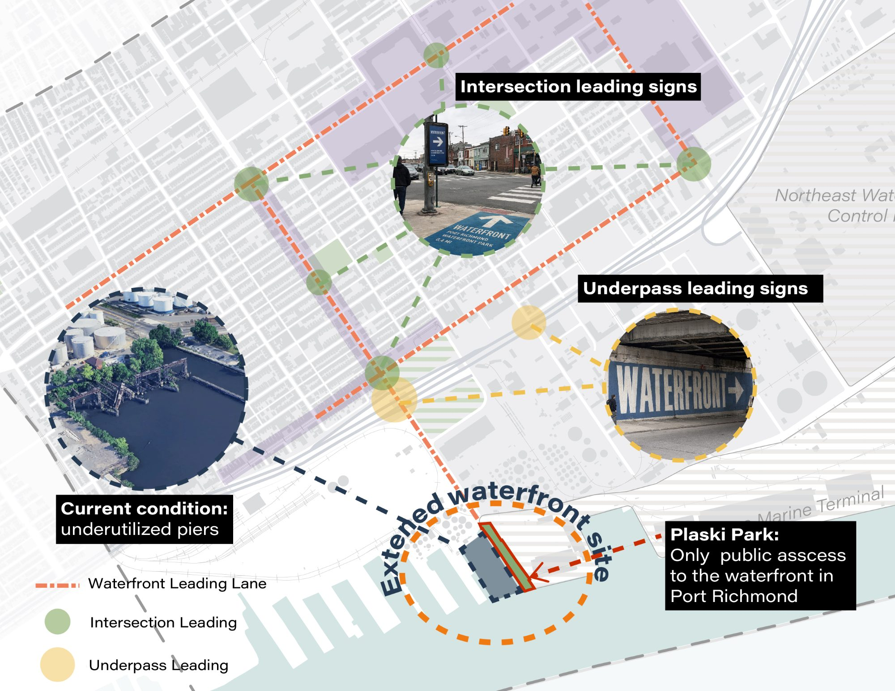
Inactive pier
Pulaski Park is the only public access to the water, and it is small and far from most homes. The abandoned pier next to it could extend the park and become the end of a route that starts inside the neighborhood.
Transform underutilized infrastructure and fragmented open spaces into an accessible green network that improves environmental resilience, expands recreation, and reconnects the community to the waterfront.
Actions
Reuse the inactive railway as a greenway and walking trail
- Establish a safe, continuous pedestrian corridorMid-term
- Create passive recreation and resting spacesShort to mid-term
- Introduce small-scale recreation, programming and local vendorsShort to mid-term
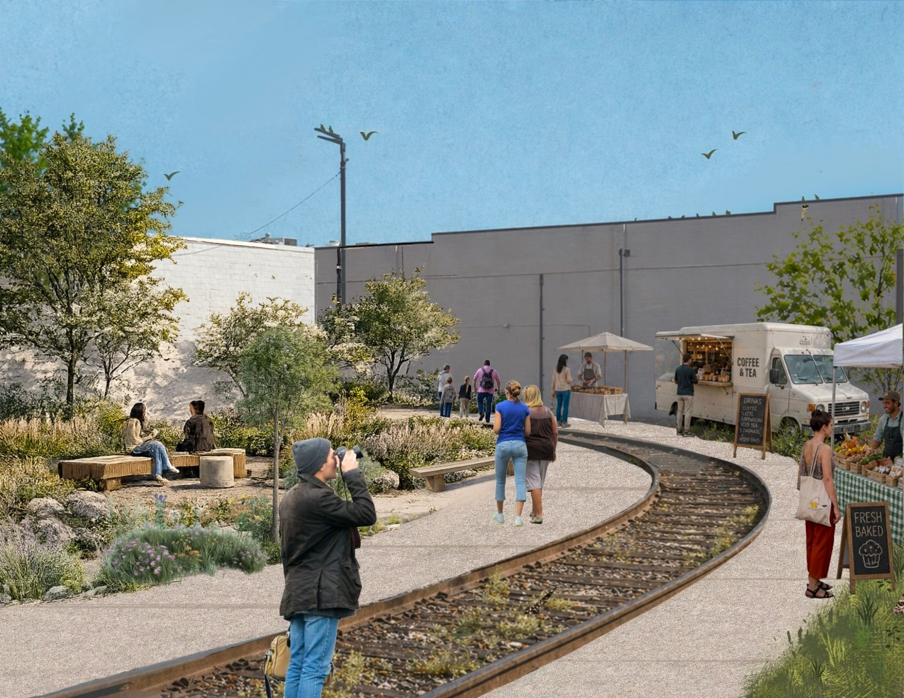
Convert underpass voids into recreation and gathering spaces
- Identify and prepare voids for public reuseShort to mid-term
- Install recreation and gathering amenitiesMid-term
- Improve comfort, safety and year-round useShort to mid-term
- Support community programming and eventsShort-term
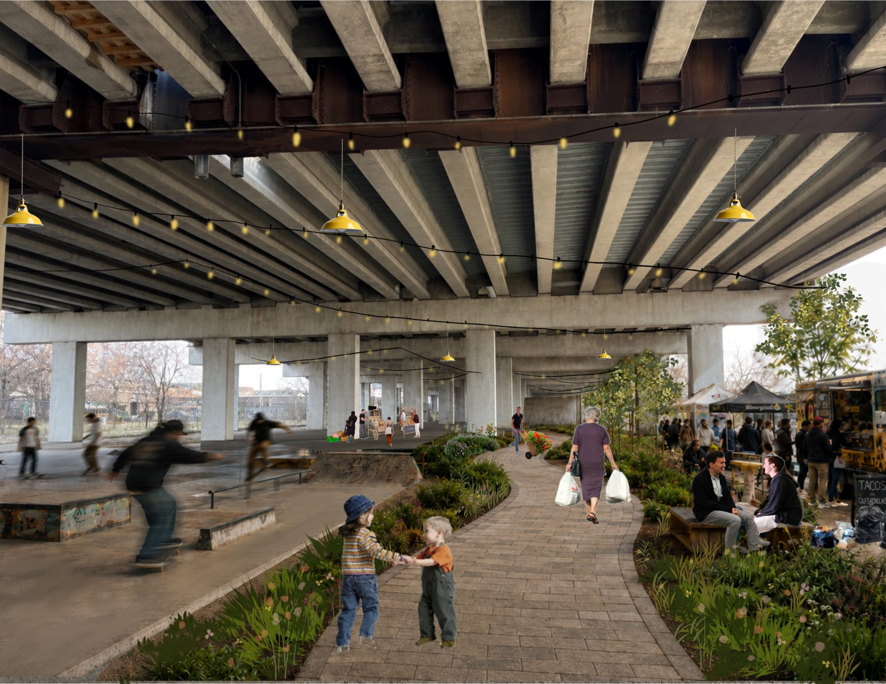
Reconnect the neighborhood to the waterfront
- Improve walking and cycling links across rail, highway and industrial landMid-term
- Expand and activate public waterfront access, including the inactive pierMid to long-term
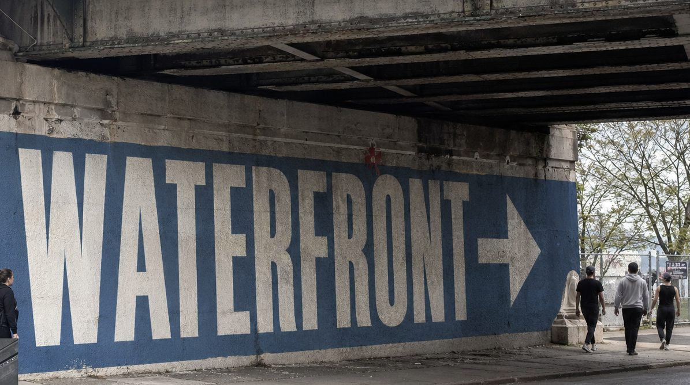
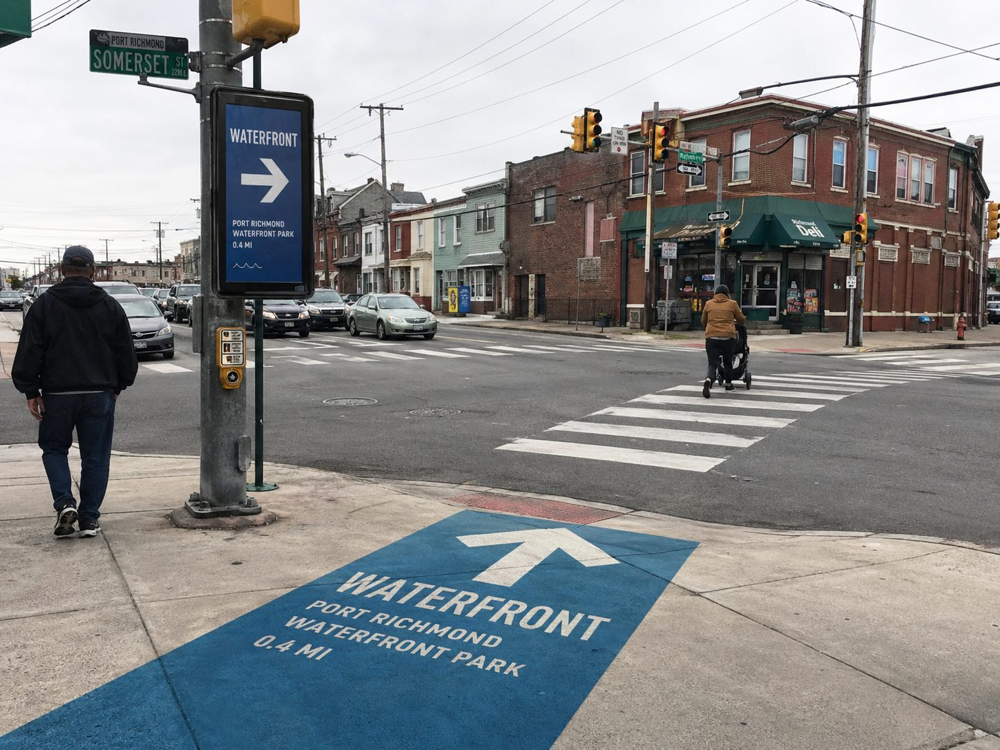
Improve ecological resilience and environmental health
- Green stormwater infrastructure to reduce combined sewer overflowMid to long-term
- Planted tree buffers against heat and pollutionShort to long-term
Why a buffer and not a row of street trees: most residential streets here are too narrow. Street trees need wide sidewalks and planting strips that these streets do not have, so the planting goes where there is room, in a buffer at the corner.
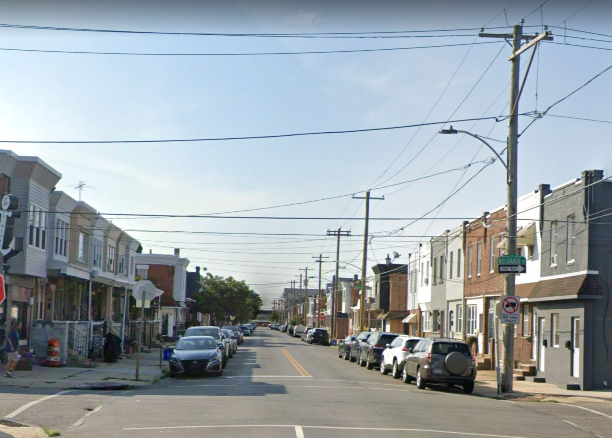
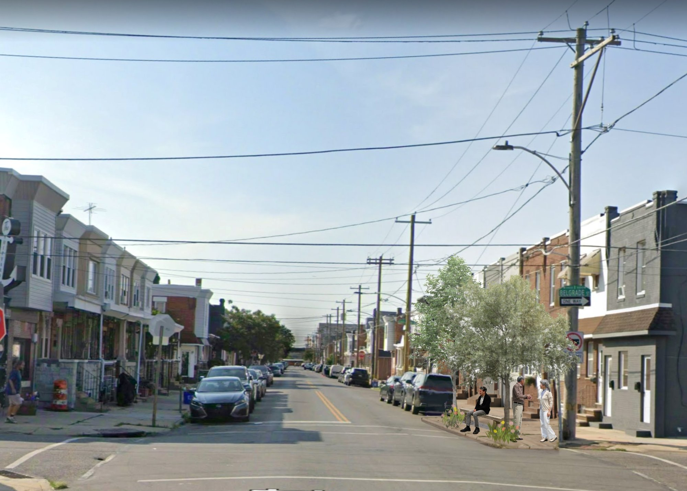